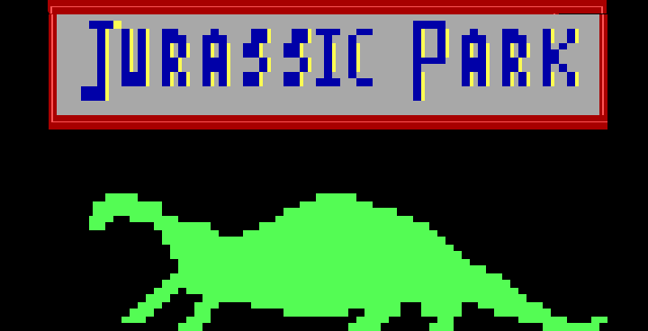
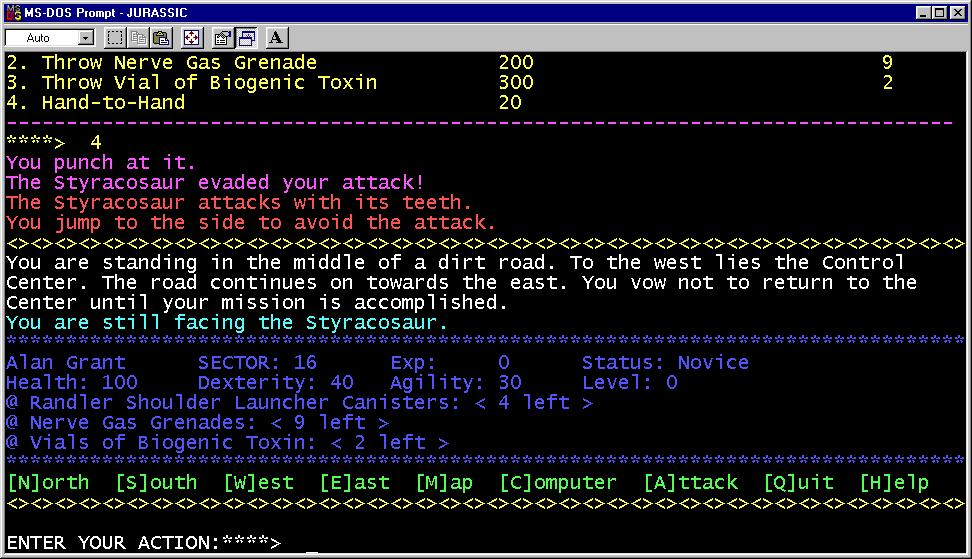
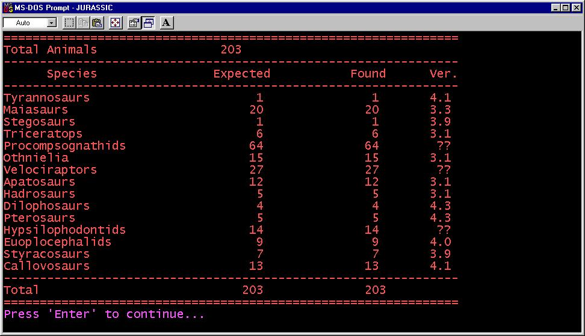

After reading Michael Crichton’s Jurassic Park novel, I felt inspired to try and capture the experience with my own game.

To give you a bit of context, this was back in the early 1990’s, when BBS (Bulletin Board Systems) ruled. JP:TA (Jurassic Park: Text Adventure) was written as a BBS door application in C which I had been learning around that time. There weren’t any graphics other than the ANSI title screen.
JP:TA was designed as a combat-centric RPG-lite game. The main goal was to explore the island as one of the book’s characters and use your limited weapon arsenal to wipe out the remaining dinosaurs. It required a fairly simple strategy of pursuing the weaker dinosaurs first, gradually building up your experience until you were ready to take on the final powerful T-Rex.

